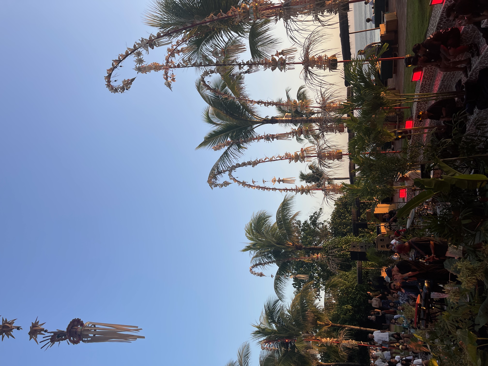

Een weekje Bali
Na een week in Jakarta bij mijn oom, zijn we met ons gezin doorgevlogen naar Bali waar we verbleven in een prachtig privéhuisje met een mooi zwembad. De dagen waren gevuld met ontspanning en relaxen in de zon, waardoor we de hele week doorbrachten bij een de beachclub 'Potato head'. Dit was de tweede keer dat we in Bali waren, de eerste keer Bali was alweer 1o jaar geleden. Het voelde goed om terug te komen, om mijn droom vakantie te beleven. We lagen de hele week aan het witte strand, slurpend aan cocktails, goeie hapjes en genietend van de zon. In de avonden kwam het eiland tot leven, mijn zus en ik besloten het nachtleven van Bali te verkennen. De straten waren levendig met kleurrijke lichtjes, en een goede energie. We ontdekten sfeervolle bars, we genoten van de levendige sfeer die Bali te bieden had.
Polaroids

My Work
Maanlicht op het strand
